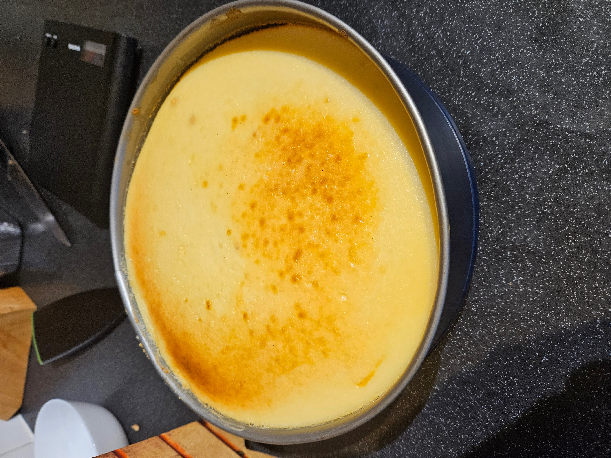

Cheesecake Recipe

Here's a cheesecake recipe. I've made this several times now and had really tasty results each time!
Ingredients:
- Packet of digestives
- 100g unsalted butter
- 900g soft cheese
- 225g sugar
- 4 eggs
- vanilla extract
Instructions:
- Preheat the oven to 180°C or gasmark 4
- Crush the packet of digestives into crumbs
- Melt 100g butter and mix it into the crumbs
- Spread the crumbs evenly onto the base of a cake tin
- Whisk 900g of soft cheese with 225g of granulated sugar until combined
- Add 4 eggs while whisking and then a teaspoon of vanilla extract
- Pour the mix into the cake tin over the crumb base
- Wrap the cake tin in foil and place in a tray of hot water before transferring to the oven. Make sure to use 2 layers of foil to avoid a soggy bottom
- Allow to bake for 1 hour or until top of cheesecake is golden brown
To make the coulis:
Ingredients:
- 100g berries of your choice
- Juice of one lemon
- Sugar to taste
Instructions:
- Simmer the berries in the lemon juice while mashing with a fork until liquified
- Gradually add sugar, tasting as you go
- When you reach your preferred sweetness, strain the coulis into a jar for later